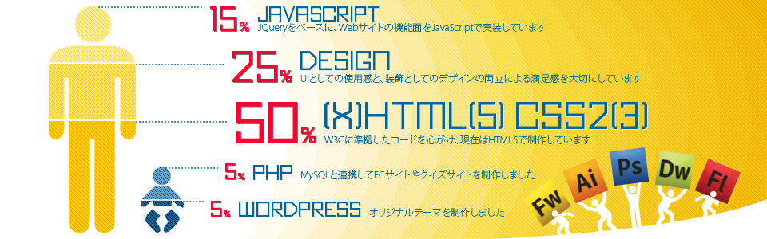

はじめまして！
水澤俊介のポートフォリオサイトをご訪問いただきありがとうございます。
このサイトはWebデザインのできるフロントエンドエンジニアを目指し活動中の水澤俊介のこれまでの個人制作物などを紹介するポートフォリオサイトです。
名前： 水澤俊介
年齢： 39歳
住所： 千葉県在住
資格： 色彩検定2級
趣味： 映画鑑賞、らくがき
好きなHTMLタグ： <div>,<li>,<a>
好きなCSSプロパティ： overflow, position, box-shadow
好きなエディター： SublimeText2
メインブラウザ： Google Chrome
東京都葛飾区に生まれる
視覚情報の特性を知るため、色彩を学習する。
iMacを買う。ほどなくWindowsパソコンも購入。WEBのおもしろさを知る。
「総合Proコース短期速習WEBデザイナー専攻」修了。いちからWeb制作を学ぶ。
WEB制作会社に入社。
『初めてのPHPプログラミング科』
『Java & Webプログラミング科』修了。
サーバサイドプログラムを学ぶ。
主にデザインを学び直す。
本サイトもWEBデザインスクールの最終制作としてつくりました。
つかんで動かせます
